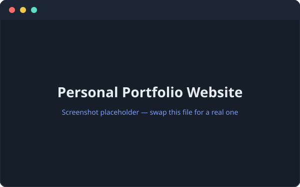
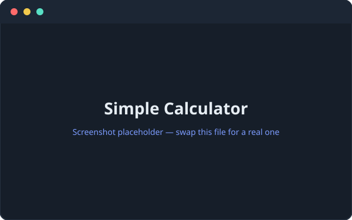
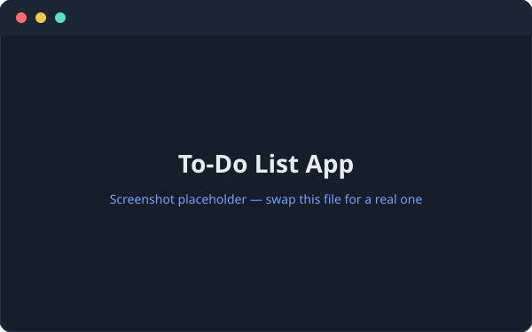

These are small projects I am working on while learning. I’m continuously adding more.
Personal Portfolio Website
Completed
This site — a multi-page personal portfolio built from scratch with HTML, CSS and
JavaScript, including a light/dark theme toggle, a responsive mobile nav, and
separate pages for About, Skills, Projects and Contact.

- HTML
- CSS
- JavaScript
- Responsive
Status: Completed
Simple Calculator
Completed
A basic calculator that handles addition, subtraction, multiplication and
division, built with HTML, CSS and vanilla JavaScript to practise DOM
manipulation and event handling.

Status: Completed
To-Do List App
Completed
A to-do list where you can add, complete and delete tasks. Tasks are saved in the
browser with localStorage, so your list is still there when you come back.

- HTML
- CSS
- JavaScript
- LocalStorage
Status: Completed
Smart Timetable & Attendance Tracker
Planned
A web-based system to manage class timetables and track student attendance,
with reminders and simple analytics.
- HTML
- CSS
- JavaScript
- Future: Backend + DB
Status: Concept / In planning